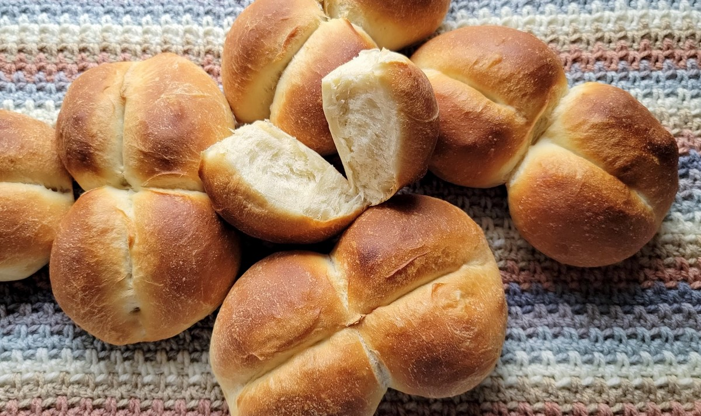

How to Make Marraqueta

Description
Marraqueta is one of the cornerstones of Chilean cuisine. This bread's crusty exterior and fluffy interior makes it the perfect container for your next favourite savory or sweet sandwich
Ingredients
To make 12 servings of marraqueta you will need the following:
- 1 kilogram of all-purpose fluor
- 1 teaspoon of sugar
- 1 tablespoon of salt
- 15g of active yeast
- 600ml of water
- Trays you can put in the oven
Note that you can get away with using bread fluor instead of all-purpose. This will require more water, as bread fluor makes the marraqueta drier.
Similarly, you can use instant yeast instead of active yeast. Because you will have to add sugar anyway, there is not much difference.
Steps
- First heat up the water up to 46°C (115°F), then pour the yeast and the sugar. Stir gently and let rise for 7 to 12 minutes.
- Pour the fluor on a large bowl and then add the salt and the water with the yeast. Knead by hand until the dough becomes uniform. This can take up to 10 minutes. Add extra water if the dough is too dry and extra fluor if the dough is too soggy. Add in small increments.
- Let the dough rest for 30 minutes. Alternatively, you can let it sit for longer to make the bread fluffier.
- On a flat surface, make small spheres of the dough and put two balls next to each other. Let sit for 30 minutes.
- By now, the balls will have started to expand and they should be touching each other. Put a chopstick or the blunt side of a knife across both balls to make a separation. Let sit for an hour.
- Pre-heat the oven to 218°C (425°F). Ideally you will have two levels in the oven, one space to put the trays that is lower than the actual bread.
- After the oven has warmed up, put the trays with water in the lower level of the oven. It will take around 10 to 20 minutes to generate steam.
- Remove the chopsticks or knives from the bread and rub some water on the outside. This is to make the exterior crusty.
- Put the bread in the upper level of the oven and let sit for 14 to 20 minutes depending on how crunchy you want the exterior to be.
- Enjoy your bread!
Go Back